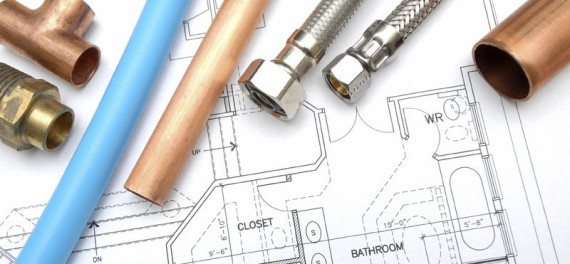
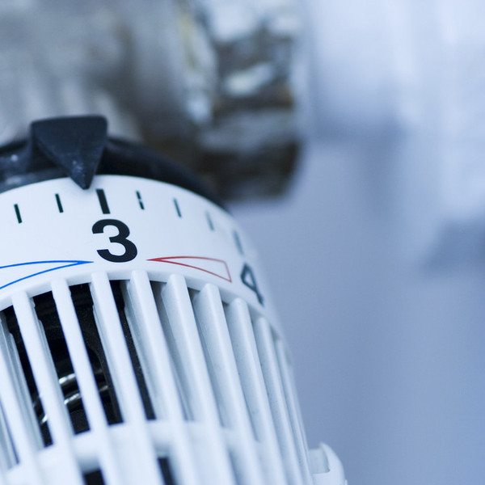

Von der Idee bis zur Umsetzung wird das Bad verständlich und sauber geplant.
Sanitärtechnik in Ludwigsburg-Eglosheim
Bad und Sanitär mit persönlicher Beratung.
H. Kurz Sanitärtechnik unterstützt bei Badplanung, Gas- und Wasserinstallation, Reparaturen, Wartung und Modernisierung.
Badplanung
Sanitärservice
Ludwigsburg-Eglosheim
Warum H. Kurz
Lokales Handwerk für Bad, Sanitär und sichere Installation.
Ein erfahrener Ansprechpartner für Menschen in Ludwigsburg, die ihr Bad modernisieren, Anlagen warten oder Schäden früh erkennen möchten.
Reparaturen, Abflüsse, Wartung und moderne Sanitäranlagen aus einer Hand.
Persönlich erreichbar in der Hirschbergstraße 37, 71634 Ludwigsburg.
Persönlich. Modern. Vertrauenswürdig.
Die Website fühlt sich jetzt wie ein lokaler Fachbetrieb an, den man sofort anrufen würde.
Gerade bei Bad und Sanitär entscheidet Vertrauen. Diese Version macht H. Kurz als persönlichen Ansprechpartner mit klarem Anfrageweg und hochwertigem ersten Eindruck.
Fokusauftrag
Badmodernisierung mit persönlicher Beratung.
Aus einer technischen Kontaktseite wird eine moderne Vertrauensseite für Hausbesitzer mit konkretem Projektwunsch.
Leistungen
So wird aus Handwerk eine klare Entscheidung für den Kunden.

Wertvoller Kernservice
Badplanung
Umsetzung Ihrer Badplanung mit Beratung, Technik und sauberer Ausführung.

Sicherheit im Haus
Gas & Wasser
Fachgerechte Installation und Modernisierung im Sanitärbereich.
Schnelle Hilfe
Reparatur & Wartung
Abflussverstopfungen, Reparaturen und Wartung sanitärer Anlagen.
Ablauf
Die Anfrage wirkt persönlich, kommt aber strukturiert beim Betrieb an.
Kunden müssen nicht lange formulieren. Sie wählen ihr Anliegen, setzen die Dringlichkeit und H. Kurz erhält eine klare erste Einschätzung.
- Bad, Reparatur oder Wartung auswählen
- Projektart und Wunschzeit angeben
- Strukturierte Anfrage absenden
Anfrage
Einfach anfragen, ohne lange Erklärung.
Der Assistent hilft dabei, das Anliegen schnell einzuordnen. Dadurch kann H. Kurz gezielter zurückrufen und besser vorbereitet reagieren.
Schnellanfrage aufnehmen
Automatisch aufgenommen: Leistung, Projektart, Dringlichkeit und Kontakt werden als strukturierte Anfrage vorbereitet.
FAQ
Antworten vor dem ersten Gespräch.
Hilft H. Kurz bei der Umsetzung einer Badplanung?
Ja. Badplanung und Sanitärinstallation werden von der Beratung bis zur Ausführung begleitet.
Kann ich auch Reparaturen anfragen?
Ja. Das Formular ist auch für Abfluss, Reparatur und Wartung vorbereitet.
Was passiert nach dem Formular?
Es öffnet sich eine vorbereitete E-Mail mit Ihren Angaben an den Betrieb.